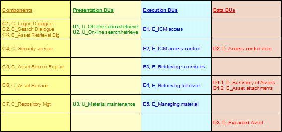
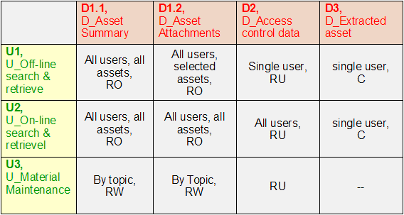
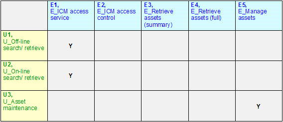
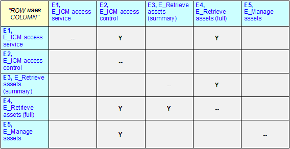
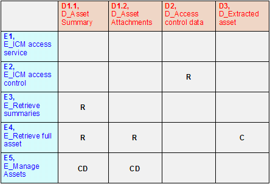
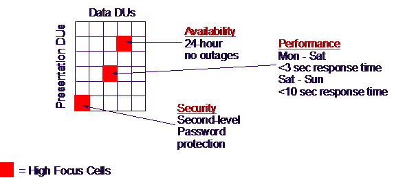

| Guideline: Deployment Unit Model |
 |
|
| Related Elements |
|---|
Different forces will be involved in the placement process, depending on the type of DU involved. For example:
Note that, if it transpires that all aspects of a component are co-located on the same node, then it is not good practice to merge all DUs into one entity, since the non-functional characteristics of a PDU, EDU, and DDU are very different, and must be separately handled in the OM development. Equally, if two or more DUs of the same type are co-located on one node, great care must be taken when deciding to coalesce (merge) them into one DU. Since the Deployment Unit Specification and Deployment Unit Model artifacts form the bridge between the functional and operational aspects of architecture, it is vital to involve both the Operational and Functional IT Architects when developing or modifying them. Defining DU Relationships Component to DU Relationships One convenient way of documenting the results of the Component to DU relationships may be via a matrix, relating the list of application components to the DU types, for example:  Figure 1: Example Component-DU matrix It must be born in mind, however, that there may be circumstances in which the component/DU mapping cannot be represented in a simple matrix such as this, particularly when there is significant component grouping, and the component-DU mapping must therefore be documented DU type by DU type. DU to DU Relationships The separation into the three different aspects (Presentation, Execution, Data) means that there are additional relationships between DU types. There are four key DU oriented relationships to be understood in order to successfully deploy the DUs on the Operational Model:
It is normal to document these relationships via DU – DU matrices, since matrices permit the documentation of relationship’s characteristics in the intersecting cells. As an understanding of these relationships is gained, remember that revisions may be induced in the candidate deployment units. Initially, you may decide to document the relationships between DUs as a simple "Yes/No". However the NFRs of the relationship will be important, particularly the Service Level Characteristics of:
These NFRs will be cascaded onto the characteristics of the nodes and connections in the Operational Model. Presentation to Data DU matrix This information is of particular value in defining the SCOPE of data DUs across the IT system, which aids in the Data DU placement on the Operational Model. Note that these PDU–DDU relationships do not represent "interactions" between the PDU and DDUs –these must be always be achieved by component executions as represented by EDUs. However, the scope and other NFR data captured in this matrix provide a very useful insight into the requirements of the solution. Identify the presentation DUs that are linked in some way to each data deployment unit. For example:
Many clients have a hierarchical business organization. Thus, at this point you may find useful to identify and document the lowest organizational level which contains all the user groups who use a particular data deployment unit. Similarly, you may want to document whether a user group from a single or multiple locations uses this data DU. During this analysis you may discover that the characteristics of a DU-DU relationship are not clear. In these cases it probably means the deployment units you had formed earlier were not quite right. Alter them in order to provide an unambiguous result in the matrix’s cells.  Figure 2: Example PDU – DDU Characteristics Matrix This matrix relates the components’ presentation DUs (rows) with their data DUs (columns). Note that in this example, only a very minimal amount of information on the relationship is documented. Presentation to Execution DU matrix Create a matrix which relates the interfaces used by the end users (ie presentation DUs) to the tasks they perform (as represented by the candidate execution DUs). Note that often many execution DUs do not provide direct support to a user, and therefore not a PDU. However, it is quite possible (although not shown in the example here) for two or more EDUs to share a common PDU, as well as one EDU to require two or more PDUs (as with E1 in the example) During this analysis you may discover that the characteristics of a DU-DU relationship are not clear. In these cases it probably means the deployment units you had formed earlier were not quite right. Alter them in order to provide an unambiguous result in the matrix’s cells.  Figure 3: Example PDU – EDU Characteristics Matrix This matrix relates the components’ presentation DUs (rows) with their execution DUs (columns). Note that in this example, only a very minimal amount of information on the relationship is documented. Execution to Execution ("uses/used by") and Execution to Data DU matrices Both of these DU relationships (EDU-EDU and EDU-DDU) needs to be understood before any viable placement decisions can be taken in the development of the Operational Model.  Figure 4: Example EDU – EDU Characteristics Matrix Note that in this example, only a very minimal amount of information on the relationship is documented. Note that the diagonal on this matrix is empty. Given the current level of elaboration (i.e. ahead of any OM development activities) this is valid. However, as placement decisions are taken it will be perfectly possible for instances of the same EDU to interact (for example if the same EDU is placed in multiple branch offices, and there is a requirement for peer-to-peer interactions).  This matrix relates the components’ execution DUs (rows) with their data DUs (columns). Note that in this example, only a very minimal amount of information on the relationship (the "CRUD" relationship) is documented. Note that, although one specific component (i.e. EDU) controls the access to one or more sets of data (as represented by one or more DDUs, this matrix can indicate a relationship with an EDU that does not own the DDU. As with the PDU-DDU matrix, this should not therefore be taken to imply any direct interactions between the DUs – rather a specification of requirement for access, which may (or may not) be restricted to the owning EDU. Reviewing Candidate DUs and Their Relationships
Identifing "Hot-spot" DUs and inter-DU relationships By now, you will probably have a very large amount of non-functional requirements information associated with the solution’s DUs. Moreover, it is probably going to be very difficult or very expensive – or both - to deliver on all of these. For example, some performance requirements may not be compatible with some availability or security needs.
So it is important to identify where the "hot spots" are in the DU tables and matrices. What are the functional and
non-functional requirements that the IT system must deliver?  Figure 5: "Hot spots" in a DU-DU characteristics matrix As well as identifying these hot spots, it is probably a good idea to rank the requirements defined in the DU tables and matrices. You may consider a sequential ranking (in which you identify the top requirements in some order), or you might adopt a MoSCoW scheme: "Must", "Should", "Could" and Would." |
| © Copyright IBM Corp. 1987, 2012 All Rights Reserved Property of IBM These materials are intended only for use as part of an IBM engagement |